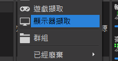
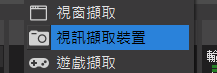
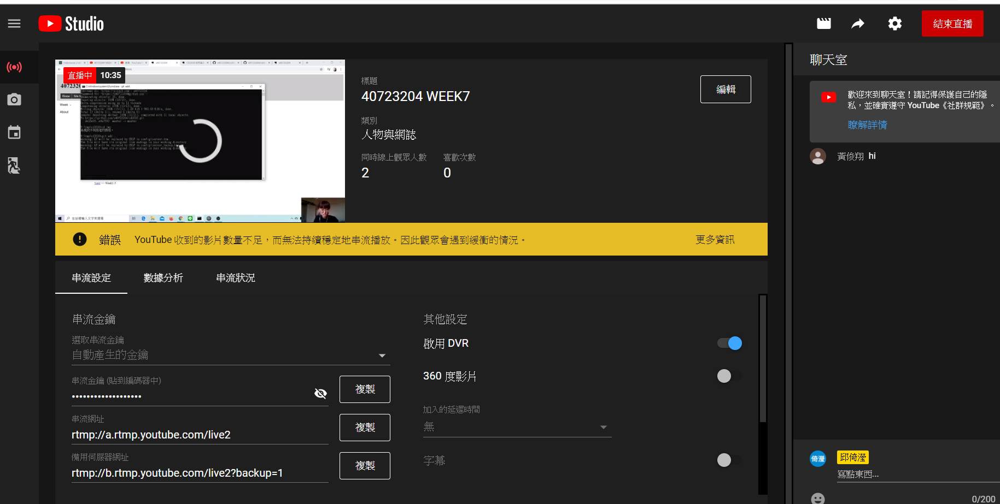
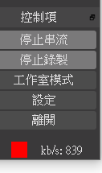
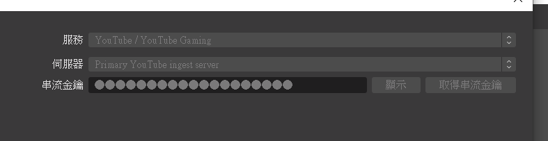
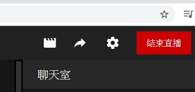

Week1-5 <<
Previous Next >> Week11-15
Week6-10
week6 利用OBS錄製影片
1.下載windows版的obs並安裝
2.開啟後可自行設定錄影快捷鍵
3.新增顯示器畫面錄製電腦螢幕

4.新增視訊畫面錄製個人畫面

5.即可開始錄製影片
下載網址: https://obsproject.com/
如何利用OBS與Youtube進行直播串流
1.進到youtube開始直播，設定好相關資訊後會產生串流金鑰

2.接著開啟obs點右下角的開始串流，或者是進入設定找到串流介面

3.進到串流設定介面之後，要把服務位址改成youtube，然後複製youtube直播設定介面產生的串流金鑰，貼上至obs的串流金鑰裡

4.完成串流金鑰設定之後即可點擊youtube右上角開始直播

week6 Assignment 2 MechanicalDesignProcess (第二章翻譯)
Topic 1 第二章翻譯 : Assignment2 MechanicalDesignProcess (Topic 1第二章)
Topic 0 & Topic 1 統整 : Assignment 2 Topic 0 & Topic 1 統整
week7 Youtobe串流OBS直播 (線上課程)
直播影片網址 : https://www.youtube.com/watch?v=o-zd0dBq8po&feature=youtu.be
本週利用youtube配合obs進行直播線上課程教學，所有組員利用觀看老師直播進行課程，各組組長則是利用meet與老師進行直播。
每個學員於本週都須學會如何利用youtube進行直播並配合obs串流，在直播同時錄製直播影片。
Week1-5 <<
Previous Next >> Week11-15